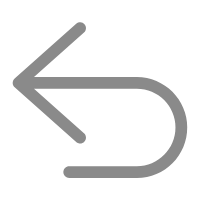

4.2 黑盒测试方法
退出登录
章节
第一章 初始软件工程
1.1 软件的本质特性
1.2 软件工程的产生与发展
1.3 软件工程的基本概念
1.4 软件质量实现
第二章 软件过程
2.1 软件过程
2.2 软件过程模型
2.3 敏捷开发过程
2.4 微软公司开发过程
第三章 编写高质量代码
3.1 编程过程与规范
3.2 良好的编程实践
3.3 Python集成开发环境
3.4 代码静态检查
3.5 代码性能分析
3.6 结对编程实践
第四章 单元测试
4.1 单元测试概述
4.2 黑盒测试方法
4.3 白盒测试方法
4.4 单元测试工具
第五章 团队开发管理
5.1 团队组织与管理
5.2 项目沟通管理
5.3 软件项目计划
5.4 软件项目估算
5.5 微软开发管理
第六章 需求分析
6.1 需求工程师
6.2 需求定义
6.3 需求分类
6.4 需求过程
6.5 需求来源
6.6 需求获取技术
第七章 面向对象分析与设计
7.1 面向对象分析
7.2 面向对象设计
7.3 类图建模
第八章 软件体系结构
8.1 软件体系风格
8.2 软件设计原则
8.3 软件体系结构风格